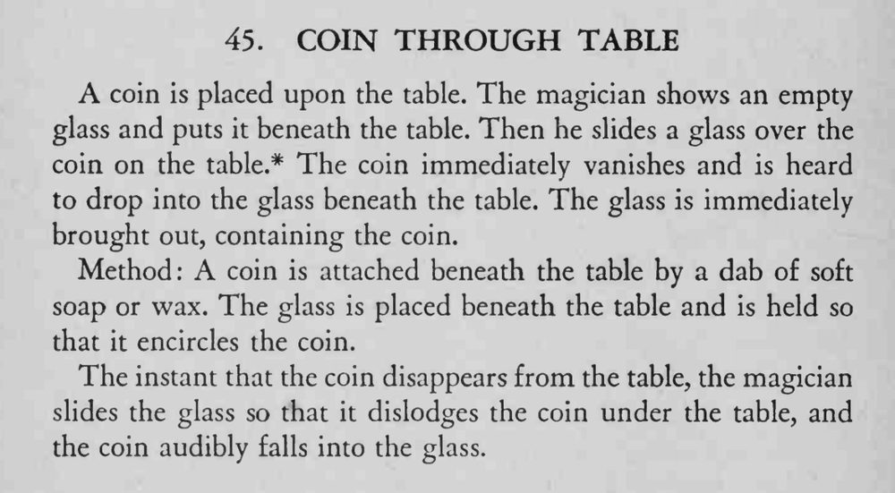

硬币放在桌上，空杯放到桌下；用玻璃杯在桌面上一滑，硬币立刻消失，并听见它落进桌下的杯子，杯子拿出来里面真有一枚硬币。
两次动作要同步：桌面硬币一消失，桌下就刮币，声音才接得上。

A coin is placed upon the table. The magician shows an empty glass and puts it beneath the table. Then he slides a glass over the coin on the table.* The coin immediately vanishes and is heard to drop into the glass beneath the table. The glass is immediately brought out, containing the coin. Method: A coin is attached beneath the table by a dab of soft soap or wax. The glass is placed beneath the table and is held so that it encircles the coin. The instant that the coin disappears from the table, the magician slides the glass so that it dislodges the coin under the table, and the coin audibly falls into the glass.